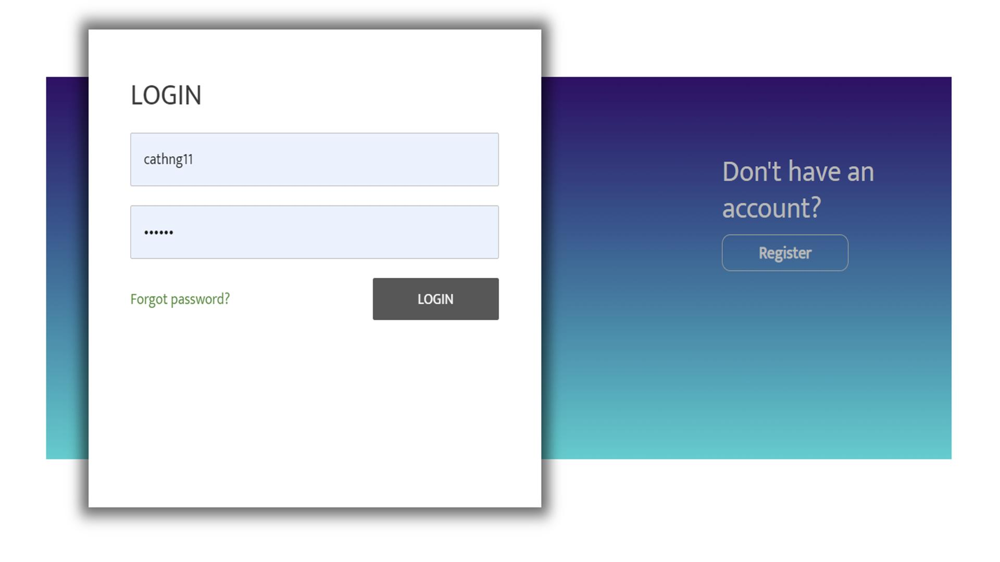
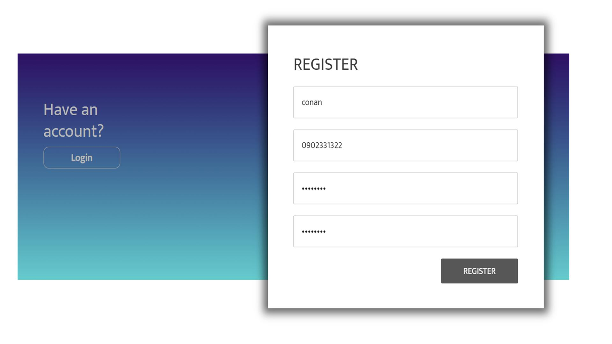
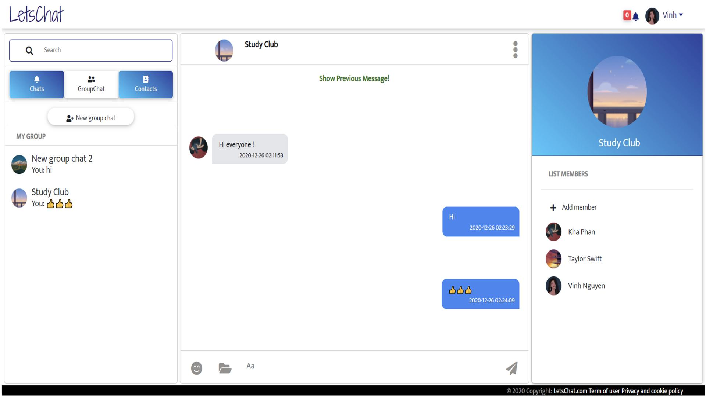
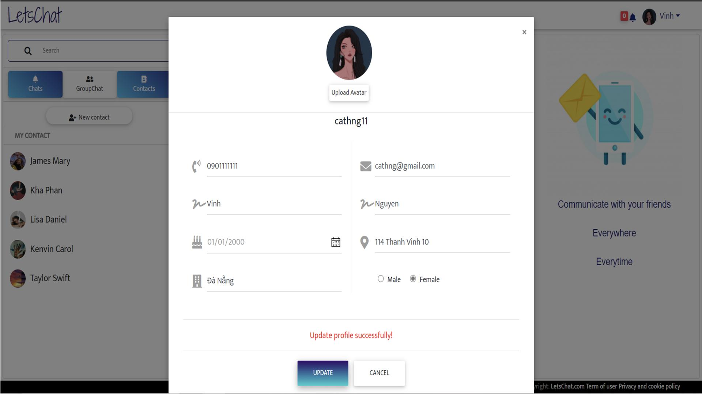
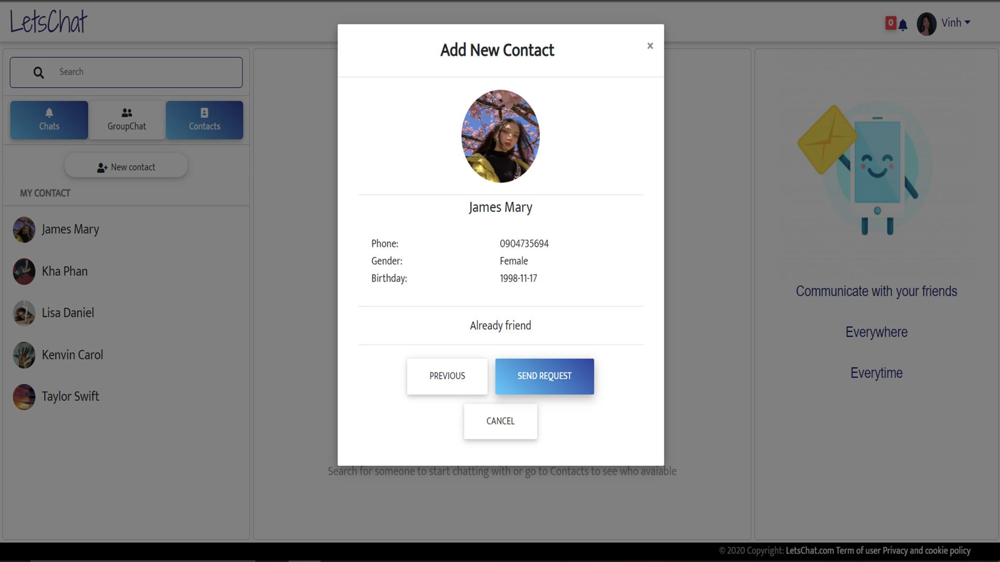
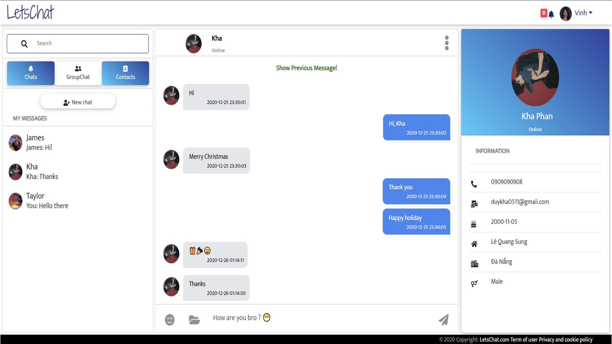

LetsChat Website Application

A website for users can connect and start a conversation with a friend or a group of friends who already have LetsChat accounts. Implement real-time communication with SocketIO. Develop the application using ReactJs, NodeJs and MySQL.

LetsChat leverages the power of SocketIO to provide users with a seamless and real-time communication experience. Instant messaging ensures that conversations happen in the blink of an eye, fostering a sense of immediacy and connectedness.

The application boasts an intuitive and user-friendly interface, making it easy for users to navigate and initiate conversations effortlessly. The design prioritizes simplicity without compromising on functionality, catering to users of all technical backgrounds.

LetsChat caters to both one-on-one conversations and group discussions, allowing users to connect with friends individually or create chat groups for collaborative interactions.

Users can connect with friends who already have LetsChat accounts, creating a secure and exclusive environment for communication. Account-based connections enhance privacy and ensure that conversations are limited to known contacts.

The front-end of LetsChat is developed using ReactJs, offering a dynamic and responsive user interface. ReactJs enables smooth updates to the UI, providing users with an engaging and interactive experience.

LetsChat's backend is powered by NodeJs, ensuring scalability and efficient handling of real-time communication requests. NodeJs contributes to the application's speed and responsiveness, crucial for a real-time communication platform.
MySQL is employed as the database management system, providing a reliable and structured storage solution for user data and chat histories. Persistent storage ensures that user conversations are preserved and accessible across sessions.
LetsChat prioritizes the security of user data, implementing encryption protocols and secure authentication mechanisms. User accounts and communication channels are safeguarded against unauthorized access, fostering a secure digital environment.